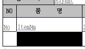
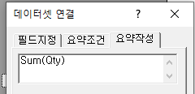

Editor 3.0
title - 반복되지 않는 부분
data - 반복되는 부분
header, footer가 있고 그 안에 데이터가 있는 느낌
RD는 데이터베이스에 직접 접속한다
Title => 제목
데이터헤더 => 컬럼명
파란줄 = 데이터가 아래로 계속 쌓인다는걸 의미
검은줄 = 중복이 안됨 (그냥 하나만 나옴)
(왼쪽)빨간줄 = 선 굵기 조절
크기 조절 : 우클릭 - 개체크기맞춤
드래그해서 크기 조절하면 에러가 생길 수도 있음
(Ctrl Z 가 한번 밖에 안됨)
*메뉴 및 기능
글씨체 - 맑은 고딕 (영어가 깨질 수 있으므로)
영어 - Calibri (영어의 기본 글씨체)
- 컬럼 선택

옆으로 드래그 했다가 다시 복귀
- 필드 값 추가
오른쪽 클릭 - 데이터셋 추가
- 합계
우클릭 - 요악필드추가 => 하단에 합계 행 생성
우클릭 - 데이터셋 연결 => 요약작성
Sum(Qty)
